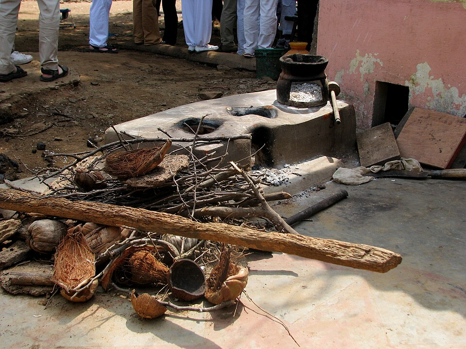
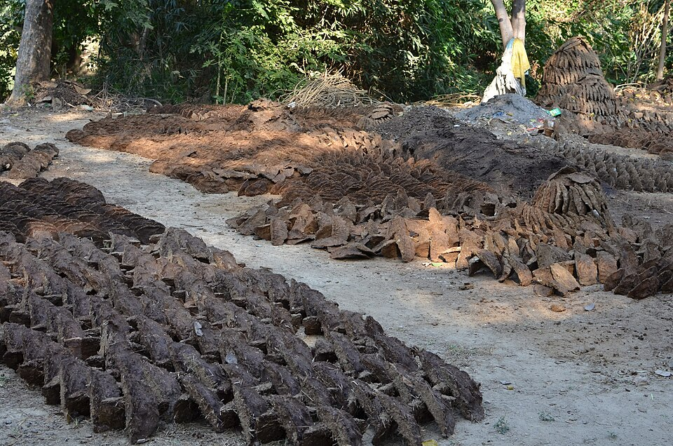
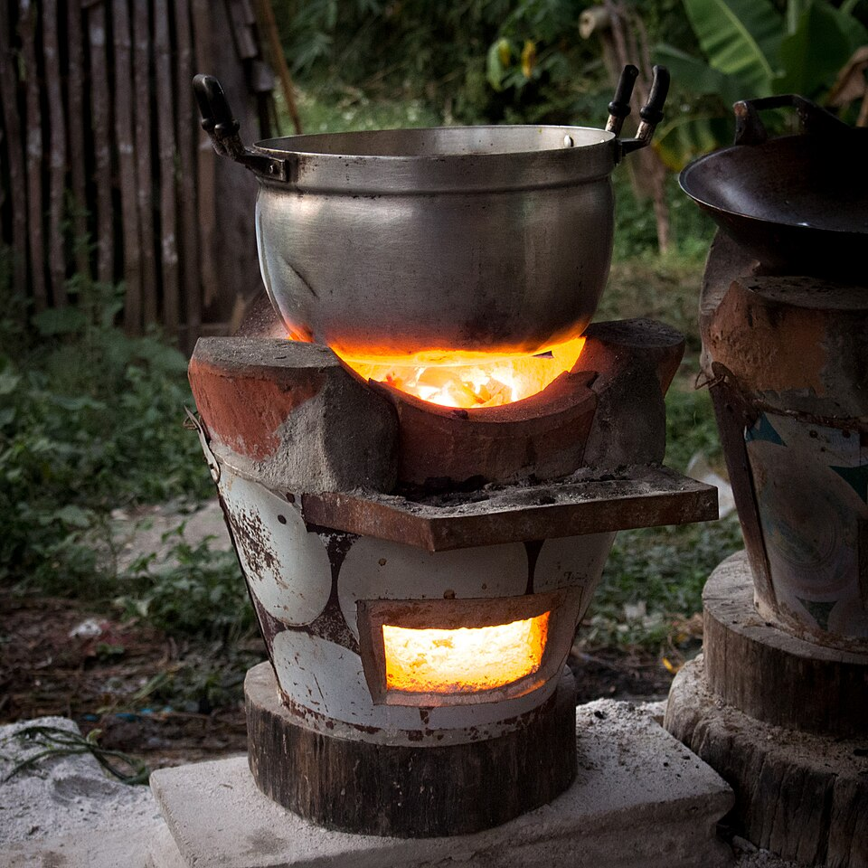

Curated work: the clean cookstove case
The short version
- Handing out 28 million "clean" stoves did not mean 28 million cleaner kitchens.
- India's indoor smoke burden was four times Thailand's, mostly because its children were poorer and sicker, not because there was more smoke.
- You can't impose a fix. It has to fit people's budgets and priorities, and cutting smoke deaths takes food, vaccines and care, not just stoves.


1. The artifacts and why I chose them
- Clean Cooking Case Study (Learning Activity 5, PDF). The main artifact: why the Global Alliance for Clean Cookstoves fell short, and how to fix it.
- Environmental Disease Burden in India and Thailand (PDF). My comparison of two WHO country profiles.
They changed how I read numbers. Before, "28 million stoves" would have convinced me. Now my first question is: 28 million of what, used by whom, for how long?
Together, they answer a question I asked in my pre-reflection: why is the same problem small in one place and a catastrophe in another?
Main sources: Gunther's Washington Post piece,[1] Chapter 17 of our reader,[2] and the WHO country profiles.[3]
2. The stove story: handing out isn't helping
About 3 billion people cook over smoky fires, and the WHO links that smoke to about 4.3 million early deaths a year.[1] So give people better stoves. The Global Alliance did: 28 million stoves, $413 million raised, 1,300 partners. Then you read the fine print.
All three numbers: Gunther (2015).[1]
Why it fell short
- Cleaner isn't clean. Most stoves still burned wood, charcoal or dung. They made less smoke than an open fire, but not little enough to protect lungs.[2]
- They didn't fit daily life. Some broke, burned more wood, or didn't get food hot enough.[1]
- The fire does more than cook. It gives heat and light, and women in India preferred cooking roti over wood and dung because it tastes right. So families "stacked" stoves, using the new one next to the old fire.[1][2]
"Why don't they give us something more substantial like LPG or toilets or jobs for children?"
She wasn't turning down help. She was saying the stove wasn't what her family needed most.
Even the "right" stove isn't enough
Experts in the article say the real answer is gas or electricity.[1] India tried that at scale with free LPG connections, through a program called Ujjwala.
CEEW (2026), six-state rural survey.[4]
The connection was free, but every refill costs cash, while firewood costs nothing. So most families use both.[4] Getting the stove into the house was the easy part.
3. India vs. Thailand: same smoke, different damage
My second artifact compared two countries where most families cooked with solid fuel. The burden from that smoke was nowhere near the same.
My worksheet stopped there, so I looked for the reason. There are two.
Reason 1. Same smoke, sicker children
WHO didn't measure anyone's kitchen. It estimated how much of each disease is caused by smoke, then multiplied that by how much of the disease the country already had.[5]
The left box is nearly the same in both countries, so the gap comes from the middle one. WHO's report says so directly: the differences come "because of differences in baseline rates of disease, not exposure or risk from use of solid fuel."[5] In India's region, child pneumonia was 88% of the indoor-smoke burden.[5]
India first, Thailand second. World Bank / WHO / UN data.[6]
India's under-5 death rate was 4.3 times Thailand's, almost exactly the 4.2-times gap in smoke burden. Underweight children catch pneumonia more easily and die of it more often, and fewer Indian families could get a sick child to care (69% vs 84%).[6] Poverty sits under all of it. That's the social determinant example I set out to find in Goal 1.
Reason 2. Different fuel, different kitchens

_cow_dung_cooking_fuel_cakes_being_produced_at_Chunar,_Uttar_Pradesh_India.jpg){kind=link}


- India: wood, dung and crop waste, often burned in indoor kitchens. One study estimated the average solid-fuel kitchen at 450 µg/m³ of fine particles over a whole day.[7] WHO's 24-hour guideline is 15.
- Thailand: where solid fuel was used, it was often charcoal, which gives off far fewer particles than dung, and often outdoors.
WHO's formula treated a smoky kitchen as equally smoky in both countries,[5] so the real exposure gap was probably even bigger than Figure 2 shows.
| Factor | India | Thailand | Explains the gap? |
|---|---|---|---|
| Child deaths before 5, per 1,000 births | 78 | 18 | Yes, the biggest piece |
| Underweight children | 44% | 7% | Yes |
| Fuel type and kitchen | dung, wood, indoors | charcoal, often outdoors | Yes, but not in WHO's number |
| People per km² | 382 | 128 | No. Smoke stays in one kitchen. |
| Share living in cities | 29% | 32% | No. Nearly the same. |
Sources: WHO profiles[3] and World Bank / WHO / UN data.[6] Years 2004–2006.
So the fix isn't only about air
If most of the smoke burden is underweight children with pneumonia who can't reach care, a stove can only do so much. WHO and UNICEF's plan for child pneumonia lists cleaner cooking as one item among many.[8]
India's weak spots in 2004 touched every column: 44% of children underweight, 33% of people with improved sanitation, and 69% of sick children getting care.[3][6] That's the same list the woman in the village was asking for: toilets, jobs, something more than a stove.
4. What I learned
You can't impose a fix. A solution designed somewhere else for one problem has to fit the family's money, food and daily routine. If it doesn't, it gets set aside, even when it's free and even when it's the "right" technology.
One problem rarely has a one-tool answer. Smoke deaths are tangled up with nutrition, sanitation and access to care. Cutting them means working on several of those at once.
Count what people actually use. Stoves delivered and connections given out are easy to count. Use and health outcomes are what matter.
What I'd do differently
- Design it with the cooks. In western Kenya, stoves caught on when local women helped build and spread them.[2]
- Pay for the fuel, not just the stove. Ongoing refill support, not a one-time gift.[4]
- Pair it with child health. Nutrition, vaccines and nearby care go after the same deaths.[8]
- Measure use and health, not the number of stoves delivered.
What I used to think
A good tool plus wide distribution equals health impact.
What I think now
A fix only works if it fits people's lives and their other needs.
5. Connections beyond this class
Another class: disease modeling. A model estimates an intervention's effect from coverage (how many people it reaches) and efficacy (how well it works). "28 million distributed" looks like coverage, but the number that matters is effective coverage: stoves clean enough, still working, and used instead of the fire. Plug in the headline figure and the model predicts lives saved that never happened.
Outside the classroom: the U.S. gas stove fight. The same problem shows up in American kitchens. A study published in late 2022 estimated that 12.7% of U.S. childhood asthma could be linked to gas stoves. It used the same kind of formula as WHO's Figure 3, though a later paper disputed how it was calculated.[9][10] In January 2023, a federal regulator said a ban on new gas stoves was on the table, and the backlash was immediate.
"The federal government has no business telling American families how to cook their dinner."
Two things stood out to me. First, that's the same reaction as the stove-stacking families in India, just louder. Telling people how to cook doesn't go over well anywhere. Second, gas is the "clean" fix being pushed in India, but it's the "dirty" option in the U.S. debate. "Clean" depends on what you're comparing it to.